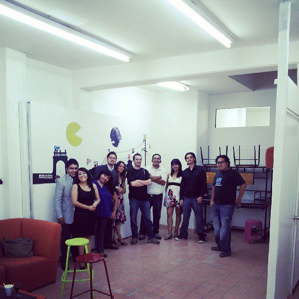

Themes
reveal.js comes with a few themes built in:
Black (default) -
White -
League -
Sky -
Beige -
Simple
Serif -
Blood -
Night -
Moon -
Solarized
Cómo crear un Hackerspace
Creado por Andrés Sabas / @sabasacustico
... “Se necesita una aldea para construir un hackerspace”...
– tu no puedes hacerlo solo.
Basado en:
Cómo Iniciar un Hackerspace
http://blog.theinventorhouse.org.
Creado por Andrés Sabas / Eden Candelas
Hackerspace
¿Qué es un Hackerspace, y que equipo básico se requiere para construir uno?
¿quienes están participando en la creación del espacio?
¿Cuales son las habilidades de ellos?
¿Están dispuestos a envolverse en proyectos de terceros?
o ¿tienen proyectos propios?
¿Cual es el fuerte de la zona en la que se iniciaría el espacio? web, arte, hardware, carpinteria, apps, pentesting, etc.
¿Necesitas espacio para herramientas grandes?
¿La comunidad donde estarán instalados tiene alguna necesidad sobre un área especifica?
Un Lugar para Hacker todas las cosas
¿Qué requisitos tiene su Hackerspace? ¿ Cuales necesidades quieren cubrir?
- Linea de 220v
- Agua corriente
- Ventilación
- Piso de concreto
- Luz natural
- Cuarto Oscuro y suministros de cuarto oscuro (dejar que haga una lista el hacker de fotos )
- Sala para servidores con aire acondicionado
- Área de proyectos de hackeo físico (hardware)
- Acceso 24/7
- Cabina de pintura
- Taller de Carpintería (al estilo Hackerspace Monterrey)
- Alberca (Como los chicos de Hackergarage)
- Aula de capacitación (como The Inventor’s House)
- Cochera
Un Hogar Para tu Hackerspace
Dónde ubicar tu Hackerspace, y las cosas que necesitas considerar.
¿Hay una parte de la ciudad que es ideal para todo el mundo?
¿Que líneas de camiones pasan cerca?
¿Es fácil estacionarse?
¿De noche es un area segura para los hackers de todos los géneros?
¿Existen otros negocios cerca?
¿Pueden compartir el lugar con alguien mas?
¿Cuales seran los horarios de operación?
Hasta que fundé The Inventor’s House no sabía que las cosas como la renta
y prácticamente todos los contratos – son negociables (hackeables, se puede regatear).
- Un espacio mixto dentro de un local comercial.
- Un garage.
- Un estudio de arte
- Un espacio de alquiler que se puede personalizar.
- Una nave industrial o bodega.
- Una universidad, colegio o biblioteca.
- Una casa
Consigue hacerlo
Hacer una lista de tareas y delegar la responsabilidad de la tripulación principal.
Realización de un plano de planta.
Pintar las paredes.
Realización de reglas de limpieza.
Internet / WiFi.
Organización de facturación. (No quieres tener problemas con el SAT, si no facturas no es necesario)
La implementación de un programa de seguridad.
La creación de un sistema de alarma.
La creación de la página web, blog y las redes sociales ( Twitter / / Facebook / YouTube )
Instalación apropiada del cableado y ventilación.
La correcta ubicación del material en el espacio (cuarto de baño, ventanas, taller, etc).
Horarios de apertura y cerrado.
Horarios para encargarse de lugar para los miembros fundadores.
Lista de costos (Membresias, servicios o productos)
Responsable de cuenta bancaria.
Programa de actividades.
Hay algunos grandes programas de código abierto, software de colaboración gratuita que pueden ayudarte a conseguir a organizar y poner todo en su lugar. Echa un vistazo a Google Docs , Slack, puedes hacer una Wiki , Teambox , Trello , Asana , y Mindjet – o se puede pagar por algo como Basecamp.
Dinero y Recursos
Cómo traer recursos para obtener las herramientas y materiales que necesita
Gastos de un hackerspace
Renta
Utilidades
Permisos
Consumibles
Herramientas y equipos
Personal
- Las cuotas de membresía
- Ventas de Productos
- Recaudación de fondos: hornear ventas, lavados de autos, fiestas, rifas, subastas, crowdfounding
- Donaciones
- Clases / talleres
- Patrocinio Corporativo
- Alquiler de espacios
- Venta de proyectos
- Préstamo de servicios como impresión 3D o CNC
- Fondos o apoyos de gobierno
Abrir tu Espacio
¿Qué hacer y dónde poner cada cosa una vez que tienes el espacio?
Lanzamiento
¿Estás preparado?, ¿Que sigue?

Hacker Visa
 www.hackervisa.com
www.hackervisa.com
Mas información
THE END
- Andres Sabas
- The Inventor's House
s@theinventorhouse.org